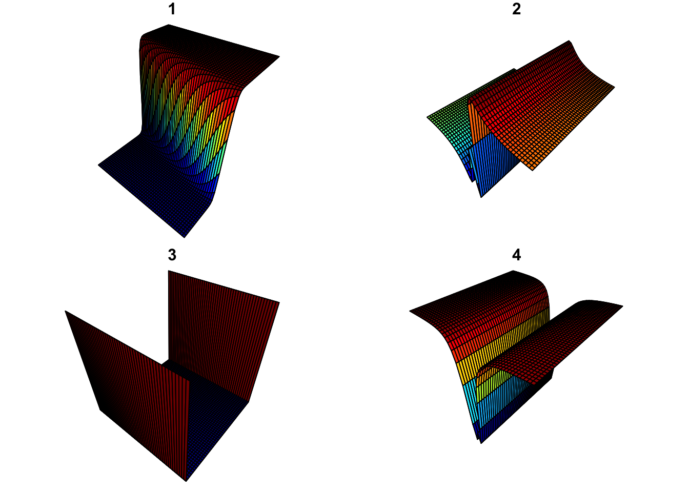
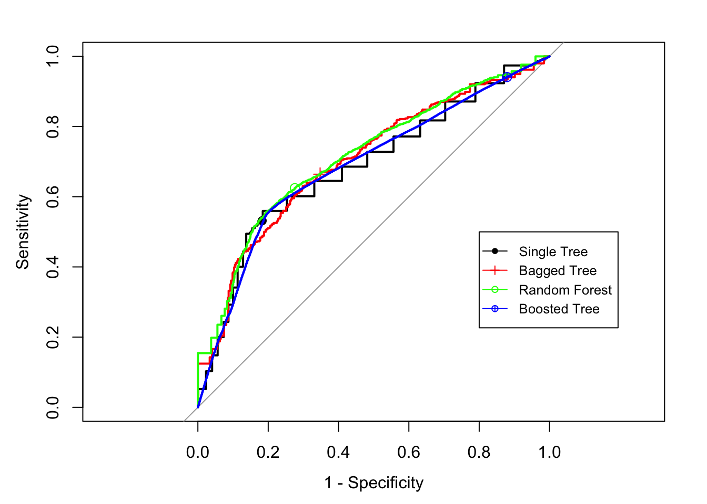
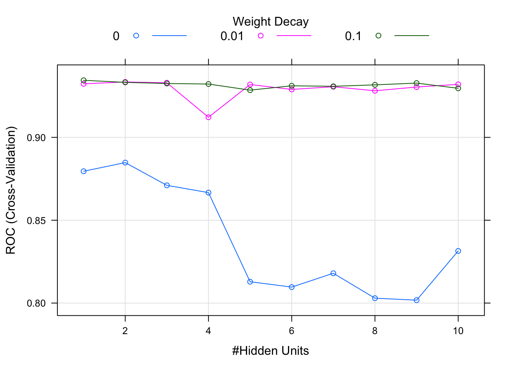

第16章 神经网络
神经网络(Neural Networks)模型以及其衍生出的深度挖掘是目前为止炒作最严重的。这是广大不明觉厉的群众对黑箱模型的一贯反应。人们对自己不了解的东西通常有两种反应：神化和魔化。本来不打算写神经网络这个章节。为什么？因为在我的从业生涯中，从来没有发现一个应用场景中神经网络的结果是最优的。但最后为什么决定又写了？因为我对各种炒作的愤慨已然上升到了一种接近厌世感的程度。我常常觉得，人类这种不明觉厉的心理是不是对思想上懒惰的保护性反应。不管怎样，在这一章我会给大家展示神经网络的基本构造，使用注意事项以及如何用R训练调试神经网络模型。希望能够打破神经网络这个谜团，也希望大家日后对自己不了解的东西保有一种空杯的心态，不要主观的去极端化。很多模型就像T台上夸张的衣服，看不懂，也穿不上。
大家对神经网络的生物学解释可能熟透了，这是大部分科普文章都提到什么类似大脑神经处理信息方式的模型。经典的神经网络模型的图大家也应该见过不少，很多节点，一层层向上直到应变量。其实和我们之前讲的偏最小二乘回归（PLS）的结构图非常相似。核心思想是将原自变量的进行线性组合，得到新的特征，也就是一个特征构造的过程。这听起来是不是很熟悉？我们在特征工程那个章节中的特征提取小节讲了很多类似的过程。日光之下并无新事。只是这里更进一步，将应变量视为这些特征的非线性函数。构造这些组合用到的参数就是大家常听到的神经网络的权重。这里组合再组合的，肯定会平添很多参数，参数一多就有过度拟合的问题，这怎么办？压缩模型，也就是加罚函数。也就是我之前碎碎念了一堆讲的收缩模型。思想是一样一样的。神经网络的主要思想其实就这样，剩下的就是细节。我知道大家现在还是云里雾里，下面我们就对这些细节开始展开，用最野蛮也是最直接的方式解释神经网络。是什么方法呢？数学…….前方会有很多公式，但我会尽量用人话给大家解释。
16.1 投影寻踪回归（Projection Pursuit Regression）
在讲神经网络之前，我们先从一个更广的框架开始，也就是PPR(Projection Pursuit Regression)。模型的中文翻译我是用Google找到的，感觉还是怪怪的，所以下面我就直接用PPR。这个模型是Jerome H. Friedman和Werner Stuetzle两位统计学大家对可加模型进行扩展得到的。
讲到可加模型和Friedman老爷子，大家有没有觉得熟悉？在讲到梯度助推（Gradient Boosting）的时候我讲过，就是Friedman等众牛人提供了自适助推算法（Adaptive Boosting）的统计学见解，将其纳入最小化指数损失的向前逐步可加模型的框架。在树模型的知识扩展部分，我唠叨了好多关于可加模型框架的内容。可加模型结构是非常常见的。到此为止你有没有发现，这看上去光怪陆离的世界表面之下其实是由一些基本的结构支撑的。专研一个学科久了，你就会发现知识不仅仅是对相关的事实和公式的罗列，而是围绕核心概念或大观点（big idea）组织的，从更本质的结构上去思考这个领域，就能够做到融会贯通。这就是大道至简。记得本科时候的高等代数教授说过，书先是越读越厚，之后就越读越薄。希望大家通过不断学习也能有这样的感觉。
有点跑题，现在回到PPR。假设\(\mathbf{X}\)是p个变量观测组成的自变量矩阵，n行p列。\(\mathbf{y}\)是相应的应变量向量。\(\mathbf{\omega_{m}},m=1,2,\dots,M\)是含有p个元素的参数向量。PPR模型可以写成：
\[f(\mathbf{X})=\sum_{m=1}^{M}g_{m}(\mathbf{X\omega_{m}^{T}})\]
这里通过对原变量\(\mathbf{X}\)线性组合得到新的特征\(\mathbf{v_{m}}=\mathbf{X\omega_{m}^{T}}\)，然后在这些新特征的基础上建立加性模型。这里的\(\mathbf{\omega_{m}}\)是单位向量，这里的新特征\(\mathbf{v_m}\)实际上是\(\mathbf{X}\)在\(\mathbf{\omega_{m}}\)上的投影。其实也就是将之前的p维自变量空间投影到新的M维特征空间上。这个和主成分分析道理一样，主成分是正交投影，这里不一定正交。是不是很抽象，那我们来举个栗子。
假设\(p=2\)，也就是说我们有两个变量\(x_1\)和\(x_2\)。如果\(M=1\)，\(\mathbf{\omega^{T}}=(\frac{1}{2},\frac{\sqrt{3}}{2})\)，那么对应的\(v=\frac{1}{2}x_{1}+\frac{\sqrt{3}}{2}x_{2}\)。我们尝试不同的函数设置，对比得到的结果。
\(\mathbf{\omega^{T}}=(\frac{1}{2},\frac{\sqrt{3}}{2})\), \(v=\frac{1}{2}x_{1}+\frac{\sqrt{3}}{2}x_{2}\) , \(g(v)=\frac{1}{1+e^{-v}}\)
\(\mathbf{\omega^{T}}=(1,0)\), \(v = x_1\), \(g(v)=(v+5)sin(\frac{1}{\frac{v}{3}+0.1})\)
\(\mathbf{\omega^{T}}=(0,1)\), \(v = x_2\), \(g(v)=e^{\frac{v^2}{5}}\)
\(\mathbf{\omega^{T}}=(1,0)\), \(v = x_1\), \(g(v)=(v+0.1)sin(\frac{1}{\frac{v}{3}+0.1})\)
我们可以用如下R代码得到最终的映射结果图：
# 我们用plot3D包绘制3维图
library(plot3D)
# 得到x1和x2
# 注意这里x1和x2要是需要是矩阵的形式
# 你可以分别查看这两个变量会发现：
# x1中每列都是相同的
# x2的每行都是相同的
# 这里的mesh()是plot3D中的函数，用于生成2维或者3维阵列
# 这里不是很好理解，大家可能得稍微想想
M <- mesh(seq(-13.2, 13.2, length.out = 50),
seq(-37.4, 37.4, length.out = 50))
x1 <- M$x
x2 <- M$y
##----- 第1种函数设置
# 将X映射到w上得到v
v <- (1/2)*x1+(sqrt(3)/2)*x2
# 将函数g()应用于v
g1<-1/(1+exp(-v))
par(mfrow = c(2, 2), mar = c(0, 0, 1, 0))
surf3D(x1,x2,g1,colvar = g1, border = "black", colkey = FALSE, box = FALSE, main = "1")
##----- 第2种函数设置
v <- x1
g2 <- (v+5)*sin(1/(v/3+0.1))
surf3D(x1,x2,g2,colvar = g2, border = "black", colkey = FALSE, box = FALSE, main = "2")
##----- 第3种函数设置
v <- x2
g3 <- exp(v^2/5)
surf3D(x1,x2,g3,colvar = g3, border = "black", colkey = FALSE, box = FALSE, main = "3")
##----- 第4种函数设置
v <- x1
g4 <- (v+0.1)*sin(1/(v/3+0.1))
surf3D(x1,x2,g4,colvar = g4, border = "black", colkey = FALSE, box = FALSE, main = "4")
大家可以看到，这个框架可以非常灵活。本质上就是对线性组合进行非线性变换，可以捕捉很多不同的关系。比如\(x_{1}x_{2}\)实际上可以写成\(\frac{(x_{1}+x_{2})^{2}-(x_{1}-x_{2})^{2}}{4}\)，这里\(M=2\)。所有更加高阶的\(x_1\)和\(x_2\)的因子都可以用类似的方式表达。事实上，如果\(M\)足够大，这个框架可以逼近任何\(\mathbb{R}^{p}\)上的连续函数。所以说这个模型族覆盖面非常广。但这也是有代价的，这个代价就是模型的可解释性，因为参数随着 \(M\)的增加而增加，此外还是一层套一层的。当然，\(M=1\)的情况除外。
PPR自1981年问世后并没有在统计学界广泛应用，因为模型对计算的要求超过了当时的计算机水平。但这是一次思想上的进步，这种思想在之后在本章的主角——神经网络模型——身上得以重生并得到应用。擦把汗，感谢大家的耐心，我们终于要正式讲神经网络模型了。
16.2 神经网络(Neural Networks)
神经网络是一类模型或者说机器学习器的总称。这里我们介绍其中最广为人知也是用的最多的一类模型——单层级反向传播神经网络（single hidden layer back-propagation network）。这个模型在神经网络模型族中的位置就好比咖啡中的卡布奇诺。这类模型是有如下结构的分层回归或者分类模型：

这是一个单一潜层级向前神经网络。图来自T. Hastie, R. Tibshirani和J. Friedman这几位大神的书 The Elements of Statistical Learning，这里的讲解也是参考这本书中的理论解释，我觉得这本书是数据科学家的必备读物，英文版的语言平实，建议大家直接购买原版。
这里的K代表应变量的个数。在回归模型中，通常只有一个应变量。但是在多分类模型中（类别数大于3），对应的应变量数目就是类别数。为了简单起见，下面我们假设\(K=1\)，应变量只有一个\(Y\)。对于分类问题，应变量\(Y\)的可能取值就是0/1。我们从下到上的解释模型。假设\(\mathbf{X^{T}}=(X_{1},X_{2},\dots,X_{p})\)是p个自变量组成的向量。这里我们用随机变量的表达形式。第一步是从\(\mathbf{X}\)到新的特征\(\mathbf{Z^{T}}=(Z_1,Z_2,\dots, Z_M)\)。
\[Z_{m}=h(\alpha_{0m}+\mathbf{\alpha_{m}^{T}}X),\ m=1,\dots,M\]
这里的\(h(\cdot)\)也称为启动函数(activation function)，通常情况下\(h(v)=\frac{1}{1+e^{-v}}\)，也就是大家在逻辑回归中常看到的那个S形函数。这里稍微的扩展一点，假设我们在上面公式中的\(v\)前面加一个因子\(s\)，也就是：\(h(v)=\frac{1}{1+e^{-sv}}\)，看看s的不同取值对曲线形状的影响：
v <- seq(-10,10,length=200)
s1 <- 1
s2 <- 0.3
s3 <- 20
h1 <- 1/(1+exp(-s1*v))
h2 <- 1/(1+exp(-s2*v))
h3 <- 1/(1+exp(-s3*v))
plot(v,h1,type="l",col=1, ylab="h", lty = 1)
lines(v,h2,col=2, lty = 2)
lines(v,h3,col=3, lty = 3)
legend("topleft", c("s=1","s=0.3","s=20"), lty = c(1,2,3), col = c(1,2,3))
大家可以看到，s越小，曲线越接近线性，s越大曲线越接近分段函数，理解这一点有助于大家之后理解初始值的选择对模型结果的影响。接下来就是如何从\(\mathbf{Z}\)到\(Y\)：
\[Y=g(\beta_{0}+\mathbf{\beta^{T}Z})=f(\mathbf{X})\]
对于回归模型，通常直接定义：
\[Y=\beta_{0}+\mathbf{\beta^{T}Z}\] 对于有K个类别的判别模型，每个类都对应一个\(\mathbf{Z}\)的线性组合，通常用的是softmax函数：
\[Y_{k}=\frac{e^{\beta_{0k}+\mathbf{\beta_{k}^{T}Z}}}{\Sigma_{l=1}^{K}e^{\beta_{0l}+\mathbf{\beta_{l}^{T}Z}}}\]
其原因很好理解，这就和标准化一样，经过softmax函数变换后得到的估计类似于一个概率值，在\([0,1]\)之间。如果\(g(\cdot)\)是一个恒等函数，那么整个模型就是一个线性模型的扩展。通过非线性变换\(h(\cdot)\)对线性模型进行了极大的扩展。之前我们讲到过，\(h(\cdot)\)称为激活函数，函数名中的英文activation就是激活某种状态的意思。这里激活程度其实和\(\Vert\mathbf{\alpha_{m}}\Vert\)的大小有关。从前面3条不同S形曲线图可以看到，当\(\Vert\mathbf{\alpha_{m}}\Vert\)很小时，激活函数几乎是线性的。反之当\(\Vert\mathbf{\alpha_{m}}\Vert\)很大时，就趋近于分段函数。如果真正使用分段函数会给后面的拟合带来困难，因为在断点处函数不可导。由此可以看出，通过选择不同的参数可以调节模型由线性到非线性的过程。现在大家是不是更能理解为什么要用这么一个函数了呢？
不知道你们注意到没有，这里单层级的神经网络模型，其实等价于之前讲的PPR。不同之处在于，PPR中的\(g_m(v)\)是一个非参函数，也就是用局部平滑的方法估计，你可以想象下局部滑动平均回归。而神经网络中的\(h(\cdot)\)是一个有着固定形式的函数。我们可以将神经网络模型转化成PPR模型的格式：
\[\beta_{m}h(\alpha_{0m}+\mathbf{\alpha_{m}^{T}X})=\beta_{m}h(\alpha_{0m}+\Vert\mathbf{\alpha_{m}}\Vert(\mathbf{\omega_{m}^{T}X}))=g_{m}(\mathbf{\omega_{m}^{T}X})\]
其中\(\mathbf{\omega_{m}=\frac{\mathbf{\alpha_{m}}}{\Vert\mathbf{\alpha_{m}}\Vert}}\)，是一个单位向量。PPR中广义的非参函数\(g(\cdot)\)比这里有着明确参数的\(h_{\beta,\alpha_{0},s}(v)=\beta h(\alpha_{0}+sv)\)更加复杂。虽然看上去有参数的式子写出来要吓人多了。因此通常神经网络中隐变量个数要比PPR中的多，也就是\(M\)的取值。
到此为止终于可以真正看出一些神经网络名字的由来了。这里每一个最初的变量\(X_1,\dots, X_p\)就好比神经元。这里的函数\(h(\cdot)\)就好比突触。为嘛？想想突触是干嘛用的，突触是神经元之间，或神经元与肌细胞、腺体之间通信的特异性接头。一个神经元释放的电或化学信号要经过突触传递给另外一个神经元。在这里的神经网络模型中，如果\(h(\cdot)\)是一个阶梯函数，也就是当输入超过某个值时函数才非零，就类似于神经元\(\mathbf{X}\)发送的信号经过突触\(h\)，当信号强度在某一范围时，就可以传递给下面的神经元\(\mathbf{Z}\)。之前讲过，分段函数有求导的问题，因此后来人将其稍微改了改，将断点用很陡峭的线这么一连，就成了这里多次提到的S曲线啦。当然S曲线可以通过参数进行变形，能够逼近线性函数，于是对于神经网络其实可以从线性向非线性逐步调优，好像一个电阻开关一样。
16.3 神经网络拟合
神经网络模型中的参数就是我们常说的权重。也就是这里的：
\[\{\alpha_{0m},\mathbf{\alpha_{m}};m=1,2,\dots,M\},\ M(p+1)个权重\] \[\{\beta_{0},\mathbf{\beta}\},\ M+1个权重\]
也就是说，一共有\(M(p+1)+M+1\)个需要估计的参数。我们将所有参数用老朋友\(\Theta\)表示。对于回归模型，拟合模型就是优化下面的误差平方和：
\[R(\Theta)=\sum_{i=1}^{N}(y_{i}-f(x_{i}))^{2}\]
对于分类模型，优化的是熵（在树模型章节中，模型分裂准则的小节有详细介绍）：
\[R(\Theta)=-\sum_{i=1}^{N}\Sigma_{k=1}^{K}y_{ik}log(f_{k}(x_{i}))\]
这里的\(K\)表示类别的数目。
对于100个自变量的模型，如果我们设置\(M=30\)的话，模型全部参数个数将为3061。随着变量和M的增长，模型参数的个数也会很快增加。不难想象，非常容易发生过度拟合。因此这里我们并非想要\(R(\Theta)\)的全局最优解，而是在此基础上对参数进行压缩。本章后面部分还会详细介绍。
最小化\(R(\Theta)\) 的一般方法是梯度法。优化过程也就是名字中的“反向传播”的由来。由于模型的形式，一层套一层，所以梯度很容易通过链式求导得到。什么是链式求导？就是：
\[\frac{df(g(x))}{dx}=\frac{df}{dg}\frac{dg}{dx}\]
逼近的过程仿佛是从网络的底端到顶端，然后从顶端回来这样迭代，因此称为反向传播。传播是向前，反向是退回。这样扫来扫去的不断降低\(R(\Theta)\)。
下面我们对回归的情况进行展开。假设\(z_{mi}=h(\alpha_{0m}+\mathbf{\alpha_{m}^{T}}x_{i})\)，且\(\mathbf{z_{i}^{T}}=(z_{1i},z_{2i},\dots,z_{Mi})\)，那么我们有：
\[R(\Theta)=\Sigma_{i=1}^{N}R_{i}=\Sigma_{i=1}^{N}(y_{i}-\beta_{0}-\mathbf{\beta^{T}z_{i}})^{2}\]
用链式求导可得：
\[\frac{\partial R_{i}}{\partial\beta_{m}}=-2(y_{ik}-\beta_{0}-\mathbf{\mathbf{\beta}^{T}z_{i}})z_{mi}\]
\[\frac{\partial R_{i}}{\partial\alpha_{ml}}=-2(y_{ik}-\beta_{0}-\mathbf{\mathbf{\beta}^{T}z_{i}})\beta_{m}h'(\alpha_{0m}+\mathbf{\alpha_{m}^{T}}x_{i})x_{il}\]
有了这些梯度，第(r+1)步迭代为：
\[\beta_{m}^{(r+1)}=\beta_{m}^{(r)}-\gamma_{r}\Sigma_{i=1}^{N}\frac{\partial R_{i}}{\partial\beta_{m}^{(r)}}\]
\[\alpha_{ml}^{(r+1)}=\alpha_{ml}^{(r)}-\gamma_{r}\Sigma_{i=1}^{N}\frac{\partial R_{i}}{\partial\alpha_{ml}^{(r)}}\]
其中又引入了一个参数\(\gamma_{r}\)，称为学习率。我们可以将之前梯度的式子简写为：
\[\frac{\partial R_{i}}{\partial\beta_{m}}=\delta_{i}z_{mi}\] \[\frac{\partial R_{i}}{\partial\alpha_{ml}}=s_{mi}x_{il}\]
其中\(\delta_{i}\)和\(s_{mi}\)分别称为当前模型在输出层级和隐层级的“误差”。从定义就可以看出：
\[s_{mi}=-2(y_{ik}-\beta_{0}-\mathbf{\mathbf{\beta}^{T}z_{i}})\beta_{m}h'(\alpha_{0m}+\mathbf{\alpha_{m}^{T}}x_{i})\]
这是反向传播函数，不同层级就是通过这个函数来回穿梭。对于学习率\(\gamma_{r}\)，通常是固定一个常数。也可以当做参数调优。
16.4 训练神经网络
训练神经网络的过程中需要注意几个方面。
- 初始值
如果权重接近0，模型倾向于线性。还记得之前的那几条S形曲线么，可以用这些曲线来帮助直观的理解。由于模型参数通常都比较多，所以训练神经网络的时候都是由算法自动选取一些接近0的值作为初始权重。这样随着迭代进行，权重不断增加，模型从线性逐渐调整成非线性。
- 过度拟合
之前讲过，神经网络的参数增加很快，非常容易过度拟合。解决过度拟合的方法有两种：（1）提前结束迭代；（2）加罚函数。提前结束就是指训练一小会，在达到最优参数估计前停止迭代，防止过度拟合。加罚函数的方法现在应该不陌生了。也就是对参数进行惩罚，当惩罚很大时，所有参数估计都将是0。我们还是用之前介绍罚函数时引入的\(\lambda\)来表示权重衰减参数。之前优化的是\(R(\Theta)\)，现在优化的是\(R(\Theta)+\lambda J(\Theta)\)，其中函数\(J(\Theta)\)可以有如下两种:
\[J(\Theta)=\Sigma_{m}\beta_{m}^{2}+\Sigma_{ml}\alpha_{ml}^{2}\]
或者：
\[J(\Theta)=\Sigma_{m}\frac{\beta_{m}^{2}}{1+\beta_{m}^{2}}+\Sigma_{ml}\frac{\alpha_{ml}^{2}}{1+\alpha_{ml}^{2}}\]
前者对权重收缩的力度比后者大。
- 标准化
一旦牵扯到对参数进行惩罚大家就该条件反射的想到参数的标度必须统一。因为这会极大的影响每个参数在罚函数中的地位。所以我们通常会在训练神经网络模型前对数据进行标准化。之后展示代码的时候会再次强调。
- 层数和隐变量数目
理论上说隐层级的数目越多越好，层级数目越多，捕捉数据中非线性关系的能力越灵活。但显然是参数个数也随之增加。但我们可以通过添加罚函数的方法来对参数进行控制。传说中的深度挖掘，就是多层的神经网络。
另外一个需要决定的就是隐变量的数目。在训练神经网络模型过程中这也是一个需要调优的参数。
- 多个局部极值
拟合神经网络模型还有一个问题就是\(R(\Theta)\)不是纯正的凸函数，也就是说会有许多局部极小值。你找到哪个局部极小值取决于你的初始值。这给模型预测带来不稳定性。解决的方法通常有两种：（1）选择一系列不同的初始值，然后最终得到的模型权重平均。 （2）用装袋法，采用bootstrap抽样，然后将这些基于bootstrap样本得到的结果平均。这两种方法都是采用了在拟合过程中的某一阶段加入一些随机性，然后将结果平均来得到稳定估计的思想。
16.5 用caret包训练神经网络
16.5.1 普通神经网络
caret包中涵盖了很多其它模型包，比如神经网络常用的nnet包。nnet包中有两个函数nnet()可以用来你和单个隐层级神经网络，avNNet()是在此基础上加入了bootstrap过程，然后对结果取平均。我们可以以caret包中的train()函数为接口，方便的训练这些模型。
现在我们以生猪疫情的数据为例，展示如何对神经网络进行调优。先载入数据，将自变量存在trainx中，应变量存在trainy中：
# 这是我自己写的一个包，没有安装的可以通过下面这行代码安装
# devtools::install_github("happyrabbit/DataScienceR")
library(DataScienceR)
data("sim1_da1")
trainx = dplyr::select(sim1_da1, -y)
trainy = paste0("BREAK",sim1_da1$y)接下来设置需要调试的参数取值。之前讲过了，这里需要调试的有权重和隐变量的个数。先设置调优参数集。decay是权重衰减参数，这里设置了3个参数值。size是隐变量的个数。
library(caret)
nnetGrid <- expand.grid(decay = c(0, 0.01, .1),
size = c(1:10))
# 得到最大的隐变量个数
maxSize <- max(nnetGrid$size)
# 计算最大隐变量个数对应的参数个数
# 之前讲过，参数一共M(p+1)+M+1个
numWts <- 1*(maxSize * (length(trainx) + 1) + maxSize + 1)
# 为了保证结果的可重复性，这里设置一个随机种子
set.seed(2017)然后设置交互校验的形式，这里我们按老规矩，设置10层交互校验。summaryFunction = twoClassSummary告诉函数返回ROC曲线下面积，敏感度和特异度统计量。
ctrl <- trainControl(method = "cv",
number = 10,
classProbs = TRUE,
summaryFunction = twoClassSummary)接下来我们就可以将这些参数传递给相应的train()函数进行调优。
method = "nnet"： 使用nnet函数tuneGrid是调优参数，trControl是调优过程定义参数，这两个参数之前已经设置好了，直接赋值就好。preProc = c("center", "scale")：对数据进行标准化trace = FALSE：不需要输出拟合的轨迹MaxNWts：最大权重参数个数maxit：最高迭代次数
nnetTune <- train(trainx, trainy,
method = "nnet",
tuneGrid = nnetGrid,
trControl = ctrl,
preProc = c("center", "scale"),
trace = FALSE,
MaxNWts = numWts,
maxit = 500)结果显示最优的隐变量个数是1，权重衰减参数为0.1：
nnetTune## Neural Network
##
## 800 samples
## 240 predictors
## 2 classes: 'BREAK0', 'BREAK1'
##
## Pre-processing: centered (240), scaled (240)
## Resampling: Cross-Validated (10 fold)
## Summary of sample sizes: 720, 720, 720, 720, 720, 720, ...
## Resampling results across tuning parameters:
##
## decay size ROC Sens Spec
## 0.00 1 0.8795739 0.8071429 0.8000000
## 0.00 2 0.8847744 0.8190476 0.8263158
## 0.00 3 0.8710526 0.8142857 0.7894737
## 0.00 4 0.8666667 0.8166667 0.8078947
## 0.00 5 0.8128759 0.7547619 0.7552632
## 0.00 6 0.8096491 0.7785714 0.7473684
## 0.00 7 0.8179825 0.7642857 0.7894737
## 0.00 8 0.8029449 0.8023810 0.7526316
## 0.00 9 0.8017544 0.7738095 0.7447368
## 0.00 10 0.8314536 0.7880952 0.7578947
## 0.01 1 0.9323308 0.8738095 0.8236842
## 0.01 2 0.9334586 0.8690476 0.8263158
## 0.01 3 0.9329574 0.8690476 0.8210526
## 0.01 4 0.9121554 0.8428571 0.8000000
## 0.01 5 0.9318922 0.8642857 0.8105263
## 0.01 6 0.9289474 0.8642857 0.8105263
## 0.01 7 0.9305764 0.8690476 0.8131579
## 0.01 8 0.9281328 0.8690476 0.7973684
## 0.01 9 0.9303885 0.8785714 0.7921053
## 0.01 10 0.9320175 0.8666667 0.8184211
## 0.10 1 0.9344612 0.8642857 0.8263158
## 0.10 2 0.9332080 0.8666667 0.8236842
## 0.10 3 0.9325188 0.8690476 0.8184211
## 0.10 4 0.9322055 0.8785714 0.8131579
## 0.10 5 0.9285088 0.8619048 0.8078947
## 0.10 6 0.9311404 0.8714286 0.7921053
## 0.10 7 0.9308271 0.8714286 0.8052632
## 0.10 8 0.9317043 0.8785714 0.8078947
## 0.10 9 0.9327694 0.8690476 0.8052632
## 0.10 10 0.9296366 0.8738095 0.8052632
##
## ROC was used to select the optimal model using the largest value.
## The final values used for the model were size = 1 and decay = 0.1.可以直接用plot()函数得到调优过程图：
plot(nnetTune)
16.5.2 bootstrap平均神经网络
之前讲过，拟合神经网络模型会遇到多个局部最小值得问题，导致结果不稳定。可以用装袋法稳定权重估计，也就是采用bootstrap抽样，然后将这些基于bootstrap样本得到的结果平均。下面我们还是用 train()函数，但是这次调用的是avNNet()来训练模型。这里我们需要稍微更改下模型调优的参数设置，多了一个bag是一个逻辑参数，表示是否需要进行bootstrap抽样平均结果。这里设置是TRUE。
# 这里运行速度比较慢
trainx = dplyr::select(sim1_da1, -y)
trainy = paste0("BREAK",sim1_da1$y)
avnnetGrid <- expand.grid(decay = c(0, 0.01, .1),
size = c(1:10),
bag = TRUE)
avnnetTune <- train(trainx, trainy,
method = "avNNet",
tuneGrid = avnnetGrid,
trControl = ctrl,
preProc = c("center", "scale"),
trace = FALSE,
MaxNWts = numWts,
maxit = 500)这里隐变量个数为10时对应的权重过多，因此出现下面错误提示：
In eval(expr, envir, enclos) :
model fit failed for Fold10: decay=0.00, size=10, bag=TRUE Error in { : task 1 failed - "too many (2432) weights"
但这并不妨碍size从1到9的调优，我们可以查看调优结果，最优的 size = 3, decay = 0.01：
avnnetTune## Model Averaged Neural Network
##
## 800 samples
## 240 predictors
## 2 classes: 'BREAK0', 'BREAK1'
##
## Pre-processing: centered (240), scaled (240)
## Resampling: Cross-Validated (10 fold)
## Summary of sample sizes: 720, 720, 720, 720, 720, 720, ...
## Resampling results across tuning parameters:
##
## decay size ROC Sens Spec
## 0.00 1 0.7805138 0.7333333 0.7000000
## 0.00 2 0.7957393 0.7238095 0.7263158
## 0.00 3 0.7912281 0.7380952 0.7000000
## 0.00 4 0.8109962 0.7738095 0.6947368
## 0.00 5 0.8039474 0.7547619 0.6815789
## 0.00 6 0.8094925 0.7452381 0.7263158
## 0.00 7 0.8208647 0.7523810 0.7289474
## 0.00 8 0.8104323 0.7928571 0.6973684
## 0.00 9 0.7916040 0.7380952 0.6947368
## 0.00 10 NaN NaN NaN
## 0.01 1 0.9124687 0.8476190 0.8263158
## 0.01 2 0.9010652 0.8357143 0.7973684
## 0.01 3 0.9213659 0.8523810 0.8157895
## 0.01 4 0.9173559 0.8357143 0.8342105
## 0.01 5 0.9153509 0.8309524 0.8210526
## 0.01 6 0.9058271 0.8380952 0.7894737
## 0.01 7 0.9166667 0.8476190 0.8157895
## 0.01 8 0.9065789 0.8309524 0.8157895
## 0.01 9 0.9167293 0.8309524 0.8289474
## 0.01 10 NaN NaN NaN
## 0.10 1 0.9125313 0.8380952 0.8078947
## 0.10 2 0.9124687 0.8571429 0.8078947
## 0.10 3 0.9136591 0.8404762 0.8105263
## 0.10 4 0.9124687 0.8285714 0.8157895
## 0.10 5 0.9170426 0.8428571 0.8184211
## 0.10 6 0.9103383 0.8285714 0.8052632
## 0.10 7 0.9119674 0.8547619 0.7921053
## 0.10 8 0.9036341 0.8404762 0.8052632
## 0.10 9 0.9117794 0.8380952 0.8184211
## 0.10 10 NaN NaN NaN
##
## Tuning parameter 'bag' was held constant at a value of TRUE
## ROC was used to select the optimal model using the largest value.
## The final values used for the model were size = 3, decay = 0.01 and bag
## = TRUE.16.5.3 模型比较
我们现在对同样的数据集，应用不同的模型，以此来和神经网络模型的结果进行比较。
- 随机梯度助推
trainx = dplyr::select(sim1_da1, -y)
trainy = sim1_da1$y
gbmGrid <- expand.grid(interaction.depth = seq(1, 7, by = 2),
n.trees = seq(100, 1000, by = 50),
shrinkage = c(0.01, 0.1),
n.minobsinnode = 5)
set.seed(2017)
gbmTune <- train(trainx, trainy,
method="gbm",
tuneGrid = gbmGrid,
verbose = FALSE)library(pROC)
pregbm <- predict(gbmTune, trainx)
roc(pregbm, trainy)##
## Call:
## roc.default(response = pregbm, predictor = trainy)
##
## Data: trainy in 426 controls (pregbm BREAK0) < 374 cases (pregbm BREAK1).
## Area under the curve: 0.9503这里随机梯度助推得到的AUC=0.9503。
- 群组lasso逻辑回归
我们在之前章节的一个知识扩展小节中介绍过群组lasso逻辑回归，其中对相同的数据使用了群组lasso，结果和神经网络差不多。为了更加清晰的比较，这里再次重复一下之前用过的方法。关于更多的模型背景介绍，大家可以返回“知识扩展：群组lasso逻辑回归”。
我自己写的包DataScienceR中的函数 cv_glasso()可以用来对不同的参数进行调优：
# trainx是自变量矩阵，去除应变量列
trainx = dplyr::select(sim1_da1, -y)
# 将应变量存在trainy中
trainy = sim1_da1$y
# 得到关于群组的指针
index <- gsub("\\..*", "", names(trainx))
# 对100个调优参数值进行调优
nlam <- 100
# 设置调优过程中模型的预测类型
# - `link`：返回链结函数的拟合值
# - `response`：返回拟合的概率值
# number of cross-validation folds
kfold <- 10
cv_fit <- cv_glasso(trainx, trainy, nlam = nlam, kfold = kfold)cv_fit$lambda.max.auc lambda auc
1.0009576 0.9453094 对应最优的调优参数值lambda=1，最优的AUC=0.945。略优于神经网络，但是可解释性和速度都高很多。总结最后得到的3个模型表现结果：
## nnet gbm lasso
## 0.93 0.95 0.95大家可以看到，3个模型表现非常类似，随机助推和lasso逻辑回归的结果略优于神经网络。但从计算时间和模型的可解释性上考虑，我会选择使用lasso。
16.6 深度学习
最后稍微提一下深度学习，这个词大家应该都该听过。不一定吃过猪肉但全都见过猪跑。深度学习是近几年发展出的多层神经网络，其实说是深度神经网络更加恰当。可以应用于高度非线性的数据。这个模型的应用主要集中在语言识别，无人车，自然语言处理这类问题上。其背后的数学原理并不是新的，只是由于计算机的发展有了新的应用。过去的一年里，深度学习炒作的很热。这里再次强调，不同的模型适用的领域不同。这类模型在社会学，心理学，市场营销方面的应用极少。我的感觉是，神经网络，或者这里的多层神经网络（也就是深度学习）适用的是那些人类可以在短时间内做出反应的事情，比如开车，识别语言，面孔，或者规则明确的事情，比如棋牌。而不适用于更加开放的问题，比如客户感知分析，客户购买行为分析，因果分析，风险控制等等。这里不打算对深度学习进行过多展开。只想提一下深度学习的几个R包，并且用本章一直使用的数据提供一些案例代码。这些代码都可以重复，但这里不会进行过多的说明。
下面的表格中总结了R中主要深度学习包和功能：
| 深度学习R包 | 功能 |
|---|---|
| mxnet | 前馈神经网络（Feed-forward neural network），卷积神经网络（convolutional neural network） |
| darch | 受限玻尔兹曼机（Restricted Boltzmann machine）, 深度信念网络（deep belief network） |
| deepnet | 前馈神经网络，受限玻尔兹曼机，深度信念网络 ，堆栈式自编码器（stacked autoencoders） |
| h2o | 前馈神经网络，深度自编码器（deep autoencoders） |
16.6.1 mxnet包
# 可以从github上下载该包
install.packages("drat", repos = "https://cran.rstudio.com")
drat:::addRepo("dmlc")
install.packages("mxnet")
# 载入程序包
library(mxnet)
# 这里用10层交互校验
idx <- createFolds(sim1_da1$y, k = 10, list = TRUE, returnTrain = FALSE)
res <- NULL
test <- NULL
for (i in 1:10) {
testx = dplyr::select(sim1_da1[idx[[i]], ], -y)
testy = sim1_da1[idx[[i]], ]$y
trainx = dplyr::select(sim1_da1[-idx[[i]], ], -y)
trainy = sim1_da1[-idx[[i]], ]$y
model <- mx.mlp(as.matrix(trainx),
trainy,
hidden_node = c(128, 64),
out_node = 2,
activation = "relu",
out_activation = "softmax",
num.round = 100,
array.batch.size = 15,
learning.rate = 0.07,
momentum = 0.9,
device = mx.cpu())
# 将预测的结果存在res对象内
res <- rbind(res, t(predict(model, as.matrix(testx))))
# 将测试集上的真实结果存在test对象内
test <- c(test, testy)
}
# 检查模型结果的auc
pROC::roc(res[, 1], test)16.6.2 darch包
# 该包可以直接从CRAN下载 载入程序包
library(darch)
# 这里用10层交互校验
idx <- createFolds(sim1_da1$y, k = 10, list = TRUE, returnTrain = FALSE)
res <- NULL
test <- NULL
for (i in 1:10) {
testx = dplyr::select(sim1_da1[idx[[i]], ], -y)
testy = sim1_da1[idx[[i]], ]$y
trainx = dplyr::select(sim1_da1[-idx[[i]], ], -y)
trainy = sim1_da1[-idx[[i]], ]$y
model <- darch(trainx,
trainy,
rbm.numEpochs = 0,
rbm.batchSize = 100,
rbm.trainOutputLayer = F,
layers = c(784, 100, 10),
darch.batchSize = 100,
darch.learnRate = 2,
darch.retainData = F,
darch.numEpochs = 20)
# 将预测的结果存在res对象内
res <- c(res, predict(model, testx))
# 将测试集上的真实结果存在test对象内
test <- c(test, testy)
}
# 检查模型结果的auc
pROC::auc(res, test)16.6.3 deepnet包
恭喜你，caret包有关于deepnet的接口，这意味着我们可以直接用train()函数进行调优啦：）。
trainx = dplyr::select(sim1_da1, -y)
trainy = paste0("BREAK", sim1_da1$y)
dnnGrid <- expand.grid(layer1 = 1:5, layer2 = 0:3, layer3 = 0:3, hidden_dropout = c(0,
0.1, 0.2, 0.3), visible_dropout = c(0, 0.1, 0.2, 0.3))
dnnTune <- train(trainx,
trainy,
method = "dnn",
tuneGrid = dnnGrid,
trControl = trainControl(method = "cv"),
preProc = c("center", "scale"))
# 检查模型结果的auc
auc(predict(dnnTune, trainx), trainy)16.7 本章总结
本章介绍了神经网络的相关背景知识。希望通过阅读这个章节，大家能够对神经网络这个黑箱，且过度神化的模型有更加理性的认识。 书中有的代码运行需要一些时间，大家可以通过并行计算提高速度。
关于神经网络需要注意的几个点：
- 数据标准化
- 对于标准化后的数据，R中的函数通常都会有权重初始值的默认设置，这个初始值一般接近于0，这样神经网络能从线性开始向着非线性迭代
- 激活函数的形式能够对神经网络产生很大的影响
因为神经网络没有可解释性，所以彻底靠结果定成败，如果精确度不达标，果断舍弃。精确度相当的情况下，选择最简单最容易解释的模型。还是那句话，所有模型本质上都是错的，但有一些是有用的。